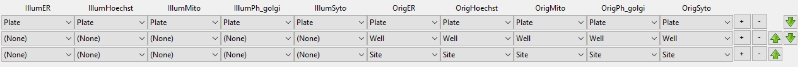
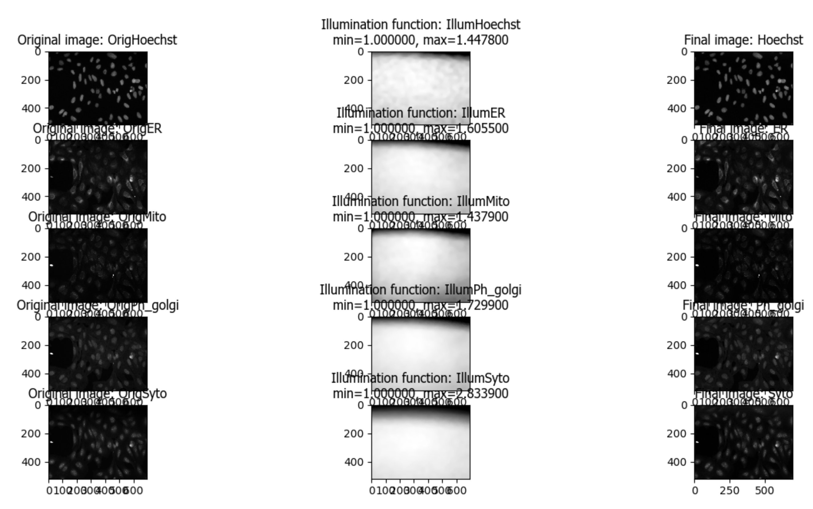

Image Processing and Basic Segmentation#
Lab authors: Beth Cimini & Esteban Miglietta .
This file last updated 2026-04-11.
Learning Objectives#
Experimenting with segmentation
Get experience with CellProfiler4
Lab Data in this folder (Image_Processing_&_Basic_Segmentation)
Important
Remember to unzip the data folder after downloading.
Basic Segmentation#
As discussed in lecture, classical segmentation typically consists of a stereotyped set of steps
Smoothing
Filling holes in threshold masks
Local maxima detection in smoothed image
Filling holes in detected objects
Here, we will demonstrate all these steps in CellProfiler, and let you play with how the parameters you choose to see how they affect the segmentation you get.
Important
There are two main ways to move around in CellProfiler once in test mode:
If you click the
Stepbutton , you will execute the just next (active) module.
, you will execute the just next (active) module.If you click the
Runbutton , all the remaining (active) modules will be executed, until the next active module marked with
, all the remaining (active) modules will be executed, until the next active module marked with Pause .
.
Load files#
Open a new CellProfiler window, or open a clean starting version by going to File -> New Project
Load the
Watershed_CellProfilerfolder into top-right space in the Images module.This will load 3 sets of images, each with a DAPI image and and actin image
Load the
basic_segmentation.cppipepipeline file into the pipeline panel (left panel in the CellProfiler window)
Note
CellProfiler .cppipe files are just text files. You can open them in a basic text editor such as Notepad to see what’s inside. It also makes them easily shareable with your labmates or as supplemental information on a paper.
Enter Test mode by hitting the
Start Test Modebutton
Tip
Curious about how CellProfiler figures out that this is 3 sets of 2 channels each, and not 6 individual images or one 6 channel image? Look at the NamesAndTypes module!
Smooth the images and find local maxima#
Run the
Smoothmodule - without going nuts, how does your result change if you change the method? What about the smoothing diameter?Run the
FindMaximamodule to find local maxima in the smoothed image created above.You may find it helpful to increase the maxima preview size and/or color.
Is it clear how all of the settings control where maxima are found?
Threshold and fill holes in the threshold masks#
Run the
Thresholdmodule on the smoothed imageRun the
RemoveHolesmodule on the thresholded image to remove any holes in the masks.If there aren’t any holes, try setting the
Threshold Correction Factorin theThresholdmodule to something like 1.1 or 1.2 (from 1.0) to create some.What do you think that setting may do, mathematically?
Click the Help button (
 ) to learn if you were right.
) to learn if you were right.
Watershed into objects, and fill holes in the object masks#
Run the
Watershedmodule to turn your masks into actual CellProfiler objects.Run the
FillObjectsmodule to remove any holes that may remain in the objects themselves.
Evaluate your performance across multiple images#
It is critical when doing segmentation to evaluate your objects against your raw images - otherwise, you cannot be certain your preprocessing steps have not introduced errors. Run the
OverlayOutlinesmodule to see how you did.If not well, where do you think you need to make changes?
It is also critical to see if your settings work well across not just one image, but all of your images. Evaluate your performance on all 3 image sets.
Tip
To move between image sets in CellProfiler, use the NextImageSet button 
If your performance is not equal across all 3, in what ways?
If your perfomance is not equal across all 3, is there anything you notice about the ones where it does vs does not perform well?
Were there modules you thought were superfluous for one image set but ended up helping for another?
Caution
How do you know when your segmentation is “good enough”? It’s a SUPER common but a very complicated question! You can check out this blog post for an attempt at helping come up with a set of rules for making that decision.
Segmentation - How we’d do it in the “real world”#
Encapsulating all of segmentation into one module#
At the end of your segmentation piepeline, you’ll see two modules that are there but inactive - they have an empty checkbox
 . Click this box to enable the
. Click this box to enable the IdentifyPrimaryObjectsmodule - it should now look like this:
Run the
IdentifyPrimaryObjectsmodule - how does it do at identifying your nuclei directly from the DNA image?Under the hood,
IdentifyPrimaryObjectsis doing all the steps we previously did, plus some filtering out of objects based on criteria you set (like whether they touch the edge). Can youIdentify(😉) which setting corresponds to each of our previous steps?
Hint
Two of the steps are combined in a single setting!
Using seeded watershed to build Cells from Nuclei#
After you’ve enabled
IdentifyPrimaryObjects, you can also enableIdentifySecondaryObjects, which is designed to take an initial, smaller, internal object (most often a nucleus) and build a larger object around it (most often a cell). Enableand run this module.
What settings correspond to our segmentation steps, as in
IdentifyPrimaryObjects?Are there any settings that are new? Click the Help button (
) to learn about what these do and how they work.
Even harder segmentation#
Nuclei are relatively easy to segment relative to cells - they are bright, fairly uniform, and often reasonably well spaced. How well can conventional segmentation work on cells, and how easily can it be done?
Download the
DL4MIA/hard/traindataset from this link.Start a new CellProfiler project (or open a new CellProfiler window) and drag and drop that folder of images into the
Imagespanel.Drag and drop the
advanced_untuned.cppipefile into the CellProfiler pipeline panel. Other than the input module settings, no segmentation settings have been tuned at all in this pipeline.Try to create an accurate segmentation of these cells - you will want to turn the advanced settings on. How well can you do? What settings seem to make the most difference?
Hint
Here is what an experienced image analyst came up with - so at least this level of accuracy is possible!

Finally, throw some measurements in the mix#
Now that you have segmented your cells, you can measure lots of things in each one individually!
Use the
 to open the
to open the Add moduleswindow.Use the search bar and look for
MeasureObjectIntensityDistribution(or find it under the Category “Measurement” on the list on the left panel). Double click the module or press the button.
button.Select what image to measure on and what objects to measure in.
Press “Add another heatmap display”
Execute the module by pressing
Hint
These are the results obtained from the example segmentation. How do your results compare to these? How about you labmates’?

How can you interpret the results shown? Check the (
) button for the module or for each parameter to understand the output better.
Bonus - Advanced Segmentation#
We’ve provided you some images 5 from the Broad Bioimage Benchmark Collection 2 that have been treated with a set of organelle dyes collectively called Cell Painting. This assay will be discussed later in the course during Beth’s seminar (and these same images will show up tomorrow). The compounds target a wide range of cell pathways, meaning that some cells and organelles will have very different morphologies both from each other and from the mock treated controls. This will give you an opportunity to try to find segmentation parameters that work across a wide range of conditions.

Fig. 1 Figure 1: Images and channels from a CellPainting assay.#
While in the traditional Cell Painting protocol we do not actually segment out any organelles (other than the nucleus), the large number of stained compartments make this an excellent set of images to find subcellular features. Finding the average or count of smaller objects inside a larger ‘parent’ object is a feature of many pipelines and an important skill to have in setting up a CellProfiler analysis.
Cell Painting generally consists of a few simple segmentation steps followed by adding as many measurement modules as can be reasonably included in a single pipeline; we have found that by doing this we can measure ~1500 features of each cell and from that create a ‘morphological profile’ that can be used to predict interesting biology including drug mechanisms of action, gene-pathway interactions, and more. See Bray et al 2016 and citations within for more information.
Goals of this exercise:#
This exercise will give you practice at finding segmentation parameters that will be robust across whatever variability may exist in your sample. This is not always straightforward, so examining your segmentation across a wide range of images will be necessary.
{kind=link}
Fig. 2 Figure 2: Examples of varied nuclei found in this data set.#
This exercise will additionally show you some ways to pull out smaller features in your image by segmenting organelles within the cells and nuclei. You will also be shown how to use RelateObjects so that you can study the average counts, distances, and measurements of the smaller organelles inside their larger parent objects.
Materials necessary for this exercise:#
These 1200 images (240 sites in 5 channels) represent 120 wells from a single 384 well plate, either mock treated with DMSO or treated with a variety of bioactive compounds. A CSV file containing associated drug treatment information has also been included.
It is additionally expected that you are generally familiar with CellProfiler, preferably after completing the Translocation tutorial or a similar introductory exercise.
Input images and configure metadata#
1. Load images and metadata#
Start CellProfiler by double-clicking the desktop icon

Download the images, pipelines, and metadata files from here
Drag and drop the ‘BBBC022_Analysis_Start.cppipe’ file into the ‘Analysis modules’ box. 7 modules should pop up, and almost all of them will show errors. This is the expected behavior.
Drag and drop the ‘BBBC022_20585_AE’ folder into the ‘File list’ box. It should automatically populate.
Also drag in the 5 illumination correction images (with a file extension of ‘.npy’) that are included in this data set.
2. Import metadata from the CSV#
So that we can explore what cells treated with different drugs look like later in the exercise, we must add this information into CellProfiler from the CSV. Provided with this exercise is a CSV called ‘20585_AE.csv’ detailing drug treatment info for each image.
In the ‘Metadata’ module, three metadata extraction methods should already be present and fully configured:
The first pulls Well, Site, and Channel metadata from all of the image files except for the illumination correction functions
The second pulls Plate metadata from the image folder
The third pulls Plate metadata from the illumination correction functions
The fourth metadata extraction step requires you to tell CellProfiler the location of the CSV file. It is looking for it in CellProfiler’s Default Input Folder, which we must therefore configure.
Return to the ‘Metadata’ module and press ‘Update’. You should now see a number of columns in the Metadata window.
If you like, examine the CSV and how the ‘Match file and image’ settings are configured:
Image_Metadata_PlateID (from the spreadsheet) is matched to Plate (extracted from the folder name by the second extraction step)
Image_Metadata_CPD_WELL_POSITION (from the spreadsheet) is matched to Well (extracted from the file name by the first extraction step)
{kind=link}
3. Examine the channel mappings in NamesAndTypes (optional)#
The channel mapping here is a bit more complicated than anything we’ve worked with before- we have a single set of illumination correction images that map to each and every well and site. We can use the metadata we extracted in the last module to make that association possible.
Two different ways of mapping images to channel names are demonstrated here. There are several others, and often you could create several correct mappings for a given set of images, but these may serve as a helpful example to refer to in your own work.
The ‘.tif’ image files are assigned a name by the Metadata extracted in the previous module (specifically ChannelNumber)
The ‘.npy’ illumination correction functions are assigned a name based on a unique string in the name (such as ‘IllumER’)
As there is only one set of illumination correction functions for each entire plate, the image sets cannot simply be constructed by using ‘Image set matching’ as ‘Order’.
Scroll to the bottom of the ‘NamesAndTypes’ to see how the image sets are constructed
‘Image set matching’ is set to ‘Metadata’
Each image channel is set to ‘Plate->Well->Site’.
Each illumination correction function is set to ‘Plate->(None)->(None)’
Metadata based matching can be useful in any circumstance where a larger group of images needs to be mapped with a smaller one, such as every plate in an image set having its own illumination correction function or every movie in a series of timelapse movies being matched to its own unique cropping mask.
{kind=link}

Fig. 3 Figure 3: A section of the ‘Image set matching’ dialog.#
Illumination correction#
4. Examine the output of the CorrectIlluminationApply module (optional)#
Since microscope objectives don’t typically have a completely uniform illumination pattern, applying an illumination correction function can help make segmentation better and measurements more even by compensating for this. Pay close attention to the top of the field of view to see the greatest effect.
Enter test mode and hit ‘Step’ to run the CorrectIlluminationApply module.
Briefly examine the output of the CorrectIlluminationApply module- you can see that the illumination correction functions show significant heterogeneity across the field of view.
These functions were created by averaging and smoothing all 3456 images from this plate, indicating the image captured is consistently dimmer in those regions for nearly all images.
Also note that while the illumination correction functions for each channel are similar, they aren’t identical; each channel in your own experiments should therefore be illumination corrected independently.
{kind=link}

Fig. 4 Figure 4: Application of the illumination correction functions.#
Segment Nuclei, Cells and Cytoplasm#
5. IdentifyPrimaryObjects- Nuclei#
Next we’ll take a first pass at identifying nuclei and cells in our initial image.
After the CorrectIlluminationApply module but before any others, add an IdentifyPrimaryObjects module (from the ‘Object Processing’ module category).
Create objects called Nuclei by segmenting on the Hoechst channel. Hit ‘Step’ to run the module. How does your segmentation look?
Use the magnifying glass at the top of the window to zoom in on an area that was segmented poorly, then update some of your parameters in IdentifyPrimaryObjects and hit ‘Step’ to rerun the segmentation.
Adjust the segmentation parameters until you feel you’re ready to move on to identifying the cells around the nuclei; as you will test the parameters for robustness later, however, the identification should be good but doesn’t need to be perfect before you move on.
6. IdentifySecondaryObjects- Cells#
After the IdentifyPrimaryObjects module but before the EnhanceOrSuppressFeatures module, add an IdentifySecondaryObjects module.
Create an object called Cells that is seeded on the Nuclei primary objects that you just created; use the Ph_golgi image.
For the purposes of this exercise, you need not worry about excluding cell bodies that touch the edge of the image.
Examine the segmentation and adjust the segmentation parameters until you feel you’re ready to test them on another image; they need not be perfect before you move on.
7. Test the robustness of your segmentation parameters across multiple compounds#
It’s (relatively!) easy to come up with a good set of segmentation parameters for a single image or a set of similar images; this data set however contains images from cells treated with many different classes of drugs, many of which have very different phenotypes. It’s valuable to learn how to create a set of parameters that can segment cells that display a variety of morphologies since you may come across a similar problem in your own experiments!
Go to Test->Choose Image Set to bring up a list of the images in your experiment.

Fig. 5 Figure 5: A section of the ‘Choose Image Set’ menu.#
Look at the column titled ‘Image_Metadata_SOURCE_COMPOUND_NAME’ to see what chemical was used in each well of the experiment. You may click on the column to sort the whole table by the values in it if you so desire.
Choose a row where ‘Image_Metadata_SOURCE_COMPOUND_NAME’ is blank- this will be a mock treated well. Press the ‘OK’ button, then run that image in test mode for your first 3 modules (through your IdentifySecondaryObjects step). Examine the output – did your nuclear and cellular segmentation hold up compared to the first images you looked at? Once your segmentation is good, try it on one additional mock treated image.
Test your segmentation on images from a few different compounds- you may choose ones you’ve worked with before, random ones, or some combination therein; if possible avoid using multiple compounds you KNOW have the same mechanism of action, though it’s alright if they occasionally do. Update your segmentation parameters until they work well on a few different compound wells, then go back to a mock treated well to make sure it still works well there.
You’re encouraged to explore the compound list on your own, but if you find yourself consistently ending up with images that look similar you can try adding images from the following list of wells- A08, A12, B12, B18, C7, D6, D19, D22, E3
Some hints on what to play with: - In both IdentifyPrimaryObjects and IdentifySecondaryObjects adjusting the threshold limits can be a good thing for when wells are empty, confluent, or have bright debris in them - In both IdentifyPrimaryObjects and IdentifySecondaryObjects adjusting the threshold method may lead to better (or worse!) results. - In IdentifyPrimaryObjects, adjusting the declumping settings (make sure to turn ‘Use advanced settings?’ on) will probably be necessary for a robust segmentation - In IdentifySecondaryObjects, you will want to test the effects of using the various methods for identifying secondary objects (Propagation, Watershed-Image, Distance-N, etc) and, if using Propagation, the regularization factor.
8. IdentifyTertiaryObjects- Cytoplasm#
After the IdentifySecondaryObjects module but before the EnhanceOrSuppressFeatures module, add an IdentifyTertiaryObjects module.
Create an object called Cytoplasm using the Cell and Nuclei objects you’ve created; ‘Shrink smaller object prior to subtraction?’ should both set to ‘No’.
Segment Nucleoli inside the Nuclei#
9. Examine the steps used to segment the Nucleoli#
The next 3 modules have to do with the creation of the Nucleoli objects. Look at the output from each to see how the image is transformed to aid in segmentation.
EnhanceOrSuppressFeatures is a module that helps enhance particular parts of an image- in this case, punctate objects or ‘Speckles’. By specifying the feature size, you can enhance different parts of the object. As we are looking for nucleoli, we apply this to the RNA channel (Syto) image, and call the output ‘FilteredRNA’. (See Fig 6 below)
MaskImage allows you to create a version of the ‘FilteredRNA’ image called ‘SytoNuclei’ where all of the pixels except the ones you specify are set to an intensity of 0- in this case, we set to 0 any pixel not inside a nucleus. By doing this, we can decrease the likelihood of detecting the cytoplasmic RNA dots.
IdentifyPrimaryObjects is used to find the Nucleoli- this is a Primary object segmentation because we are not using another object as a seed to grow around, but only segmenting based off the intensity in our ‘SytoNuclei’ image.
If you like, you can add an “OverlayOutlines” module at this point to overlay the identified nucleoli on the original Syto image to assure yourself that the segmentation not only matches the speckle-enhanced ‘SytoNuclei’ image, but also looks accurate on the unprocessed image as well. This is not necessary but can be a nice “sanity check”.

Fig. 6 Figure 6: Enhancing the Syto image allows you to isolate nucleoli against the nucleoplasmic background signal.#
Segment the Mitochondria inside the Cytoplasm#
10. Mask the Mito image by the Cytoplasm object#
Now that you’ve seen an example of how to segment an organelle, you will do so for Mitochondria in the following steps.
After the IdentifyPrimaryObjects module for Nucleoli but before the RelateObjects modules, add a MaskImage module (from the Image Processing module category).
Call your output image ‘MaskedMito’.
As you saw above with the Nucleoli example, mask the image via Objects, and use the Cytoplasm objects to create the mask.
You may even experiment with doing a similar EnhanceOrSuppressFeatures step before the masking as was used for the Nucleoli; you may get greater signal-to-noise, but possibly at the expense of “fragmenting” the Mitochondria objects in the later identification steps.

Fig. 7 Figure 7: The MaskedMito image contains only the regions of interest.#
11. IdentifyPrimaryObjects- Mitochondria#
After your MaskImage module but before the RelateObjects modules, add an IdentifyPrimary Objects module to identify Mitochondria from your MaskedMito image.
You should consider using a wide range of pixel sizes here; 2-20 is a reasonable first place to start.
If you did use EnhanceOrSuppressFeatures in the previous step, using OverlayOutlines to compare the outlines with the original image is a good idea once again.
Perform Measurements#
12. Add measurement modules to your pipeline#
After your segmentation of the mitochondria but before the RelateObjects modules, add as many object measurement modules as you would like.
Some suggested modules to add- MeasureObjectSizeShape, MeasureObjectIntensity, MeasureGranularity, MeasureObjectNeighbors.
Which objects do you think would be valuable to measure with each of these modules? Which channels would you measure your objects in?
For a typical Cell Painting experiment you would add as many measurements as possible, but that isn’t necessary here; however, do make sure every object gets at least some measurements.
While MeasureCorrelation, MeasureTexture, and MeasureObjectIntensityDistribution can produce valuable data for downstream profiling, they can be memory-intensive and/or slow so should not be added for this example pipeline in the interest of pipeline run time. MeasureNeurons is not well suited for this pipeline.
Export data#
13. Add ExportToDatabase to your pipeline#
In order to use the data visualization and machine learning tools in CellProfiler Analyst, the measurements will need to be saved to a database using the ExportToDatabase.
Add a module ExportToDatabase located under the module “File Processing” category
NOTE: while in Test mode, the ExportToDatabase module will have a yellow warning sign in the pipeline panel and yellow- highlighted text in the module settings. Holding the mouse over the yellow-highlighted text informs the user that measurements produced in Test mode are not written to the database. This is normal behavior and does NOT indicate an error.
Set up the module as in the image below:

Fig. 8 Figure 8: The ExportToDatabase module. The yellow warning symbol warns you that since you’ve chosen to make individual tables for each object, you will only be able to examine one object at a time in CellProfiler Analyst.#
Check the box “Write image thumbnails directly to database?” From the list-box that subsequently appears, select “rawDNA” and “rawGFP”; you can make multiple selections by using Ctrl-click (Windows) or Command-click (Mac). Leave the rest of the settings at the default values.
NOTE: Because you have different object counts for some of your different types of objects (the counts of Nuclei, Cells, and Cytoplasm will be the same, but the counts of Mitochondria and Nucleoli will not be), you will not be able to export the objects as a single data table but must instead use a different data table for each object. This will not affect the actual outcome of the experiment, but will mean that each object will get its own properties file and that you can only look at the measurement for one object at a time in CellProfiler Analyst.

Fig. 9 Figure 9: The warning symbol warns you that since you’ve chosen to make individual tables for each object, you will only be able to examine one object at a time in CellProfiler Analyst.#
Relate Nucleoli and Mitochondria to their respective nuclei/cells#
14. Examine the settings of RelateObjects#
After your Measurement and before your Export modules you should find two RelateObjects modules. One relates Nucleoli to Nuclei, while the other relates Mitochondria to Cells.
Relating the objects allows you to create per-parent means (ie, for this cell what is the average size of an individual mitochondrion) and calculate distances from the child objects to the edge and/or the center of the parent (ie how far is each nucleolus from the center of the nucleus).
Perform the analysis on ALL the images#
15. Run the pipeline (optional)#
If you have time and/or if you’d like to play with the data in CellProfiler Analyst later, exit test mode, close the eyes next to each module, and run the pipeline
The pipeline will create a database called BBBC022.db, containing the output of all of the measurements you have added to your pipeline